1, метод GET 1.0:
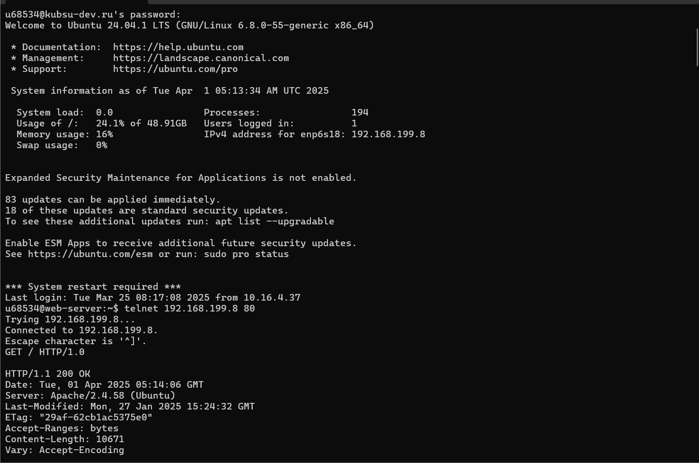
2, метод GET 1.1:
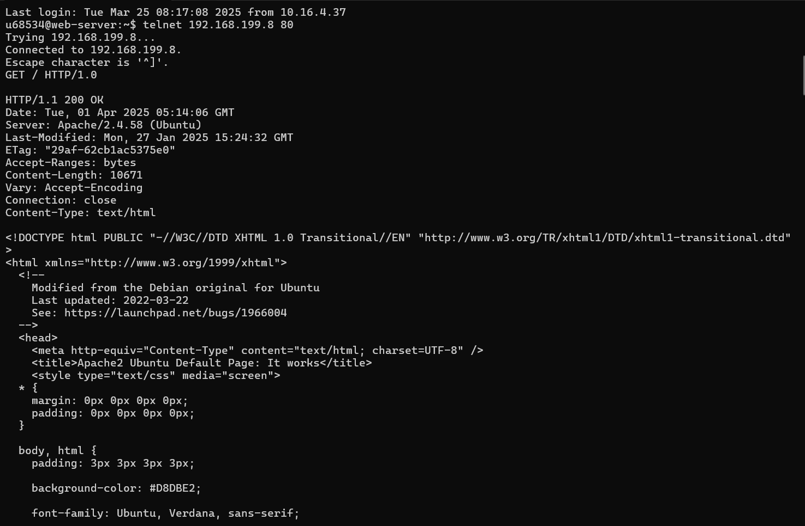
3, размер файла:
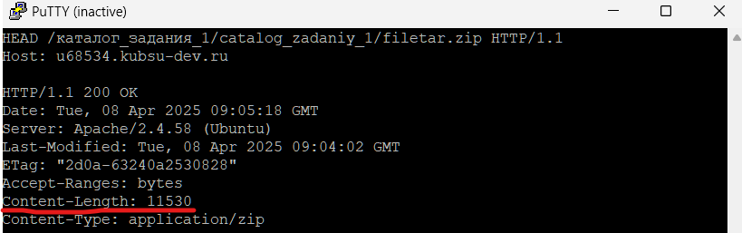
4, медиатип файла:
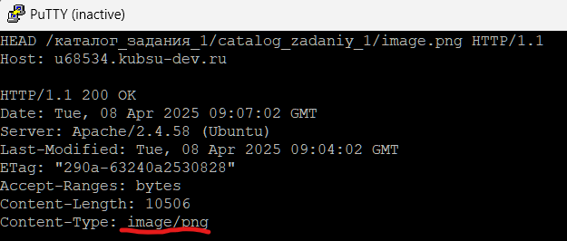
5, отправление комментария:
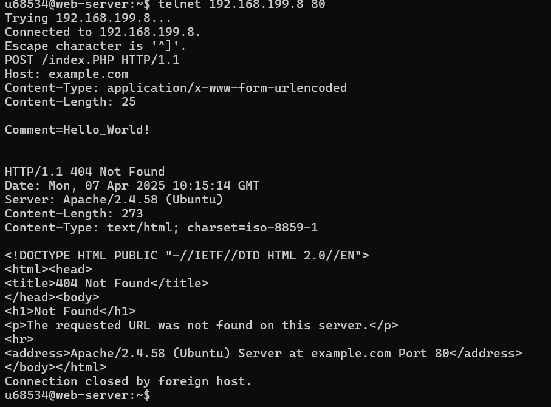
6, получение первых 100 байт файла:
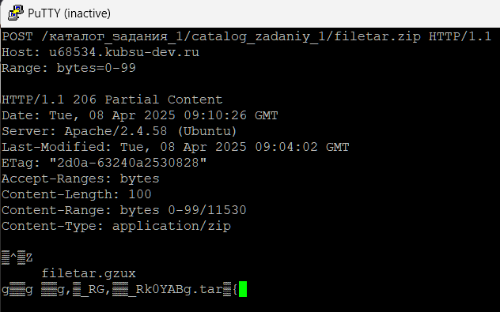
7, определение кодировки ресурса:
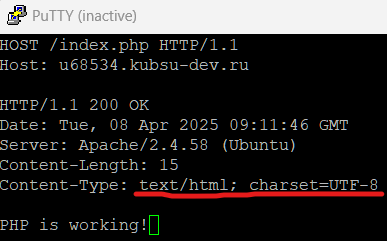
1, подключение через консоль:
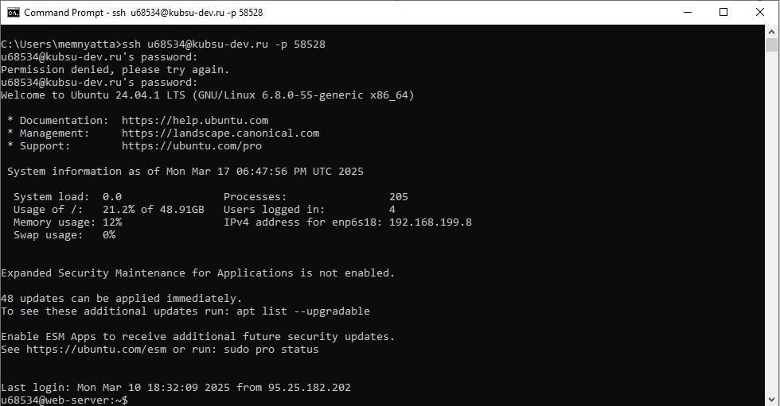
2, команда ping, показывает IP адрес веб-сервера:
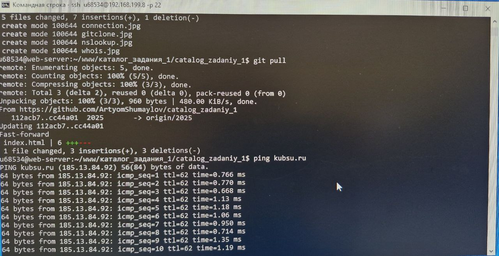
3, команда nslookup, показывает А-записи и МХ-записи домена:
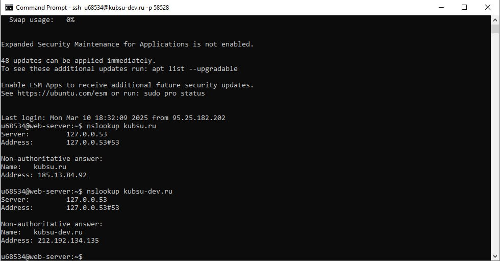
4, команда whois, покащывает дату регистрации домена:
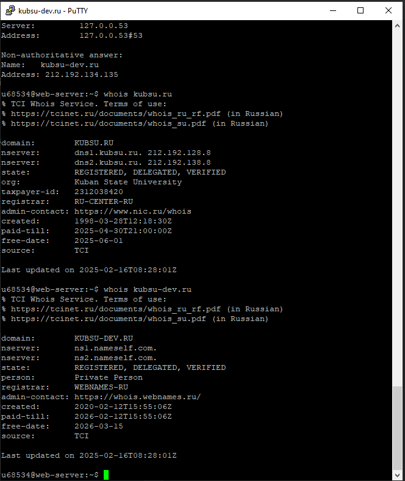
5, копирование репозитории гитхаба в папку:
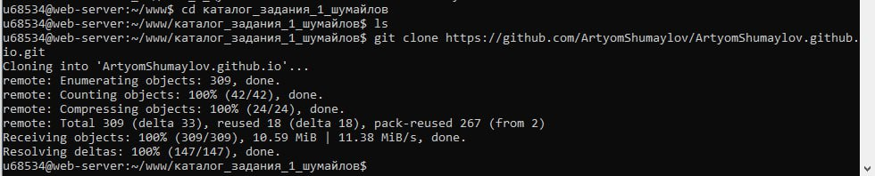
6, соединение через FileZilla:
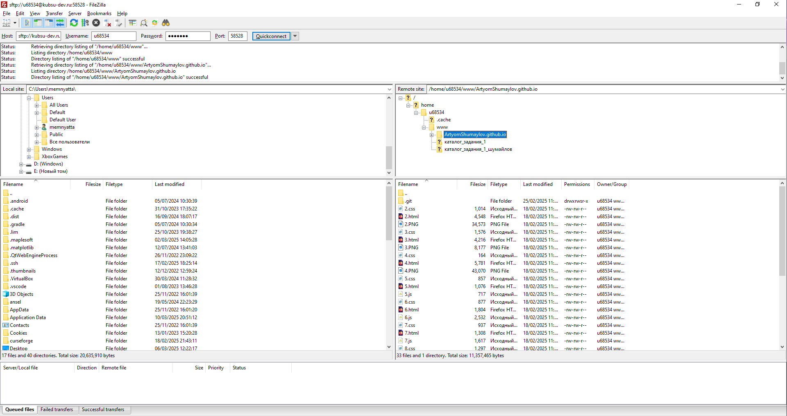